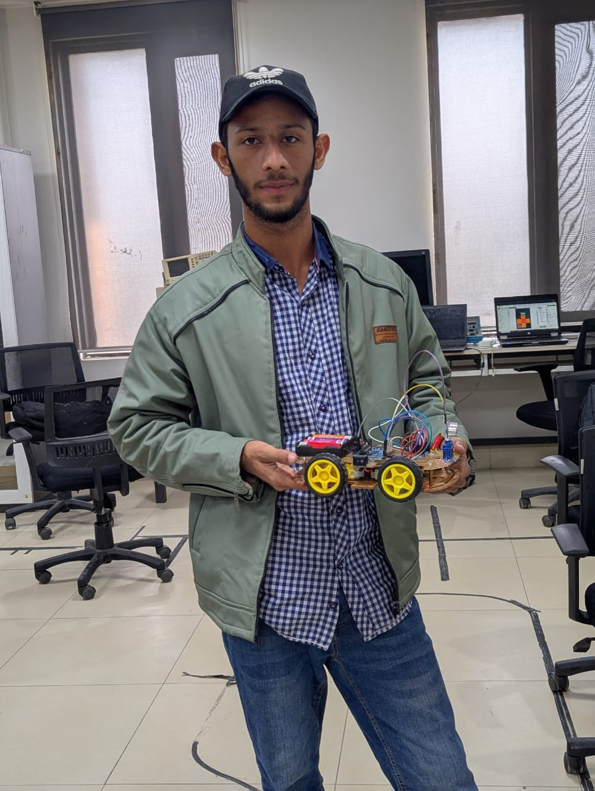

01 / HARDWARE
Obstacle-Avoiding Robot
An Arduino robot that detects obstacles and adjusts its path using an ultrasonic sensor.
ArduinoHC-SR04L298N
Explore project
Computer Systems Engineering · IBA Sukkur
I’m Rizwan Khokhar — a CSE student exploring software engineering, data structures, and the world where code meets hardware.

Place rizwan.jpeg beside this HTML file to show your photo.
CURRENT BUILD
Engineer in progress.
Curiosity → experiments → better systems.
CURRENT CHAPTER
3rd semester · CSE
Selected experiments
A few projects from my software and hardware learning journey. Select a card for the details.
An Arduino robot that detects obstacles and adjusts its path using an ultrasonic sensor.
Implementing core data structures from scratch to understand how they work beneath the surface.
A logic-focused program for union, intersection, difference, complement, and membership checks.
A complaint-management concept with student/admin views and local data persistence.
A console banking app to practise encapsulation, validation, and modular class design.
Browse repositories, code, and the latest experiments.
A little about me
I enjoy understanding how things work — from the logic behind a data structure to a sensor-driven robot. Right now, I’m strengthening my programming fundamentals and learning by building.
See what I’m learningClasses, interfaces, exceptions, GUI basics, and clean problem-solving.
Arrays, linked lists, stacks, queues, recursion, and complexity.
Sensor integration, motor control, and hands-on prototyping.
Git, GitHub, VS Code, Arduino IDE, and learning in public.
Beyond the code editor
Current role
Campus Ambassador · Devsinc
Connecting students with tech opportunities and helping grow a stronger campus tech community.
Current role
Deputy Lead, Technical & Development Team
Contributing to technical initiatives, student collaboration, and building things on campus.
Community
Area Head
Helping students navigate educational opportunities and access information about university admissions and scholarships.
Hands-on experience
IBA Sukkur · MUET · RoboCompX
Learning through teamwork, prototypes, technical events, and practical problem-solving.
Also exploring Microsoft Learn resources and Applied Skills learning paths.
Have an idea?
Open to meaningful collaborations, student tech initiatives, and opportunities to learn from people who build.